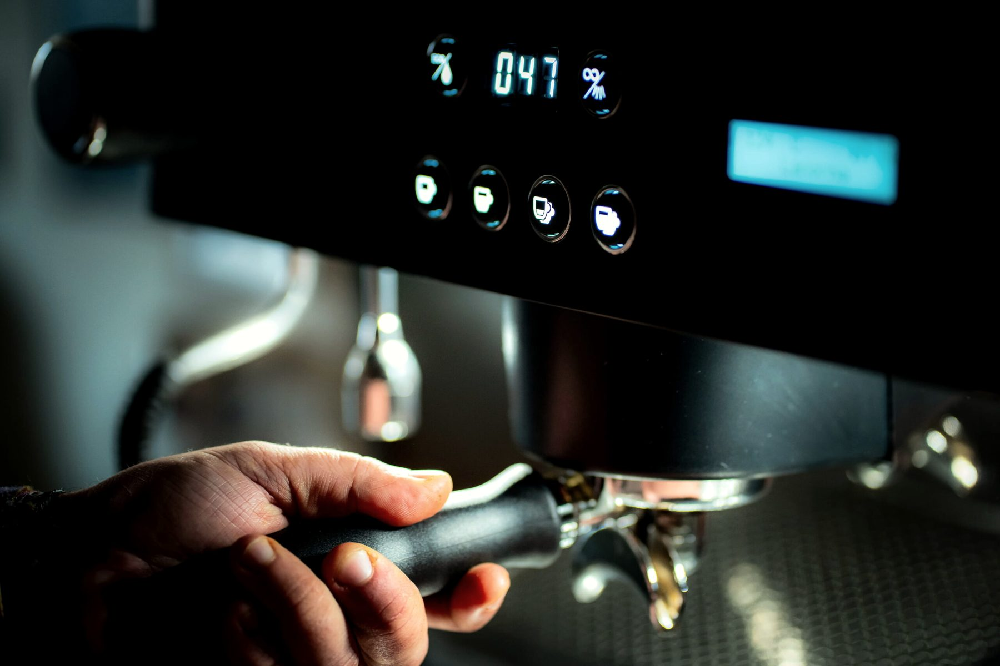

Lo único cerrado hoy: la formación será presencial, en el taller de La Norma en Palma de Gandia. Todo lo demás —módulos, duración, plazas, precio, certificado— es una propuesta para decidir con Daniel antes de publicar nada.

Formación técnica para distribuidores y servicios técnicos